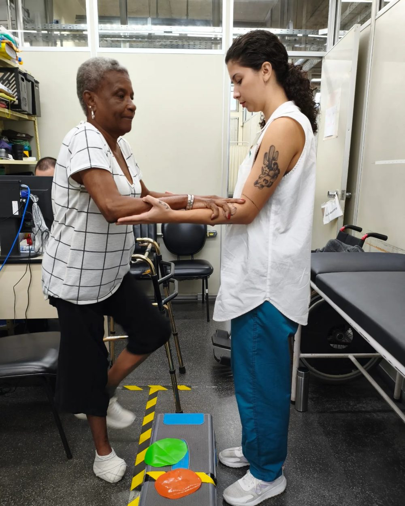
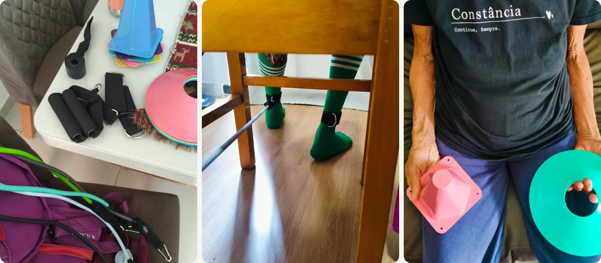

Fisioterapia onde a vida acontece.
Atendo em casa, com avaliação completa e um plano feito para cada pessoa. Para pessoas idosas, também em ambiente hospitalar.
- Domiciliar
- Hospitalar
- Sessões de 50 min
- Seg, ter e qui
Atendo em casa, com avaliação completa e um plano feito para cada pessoa. Para pessoas idosas, também em ambiente hospitalar.

Fisioterapia pélvica e uroginecológica, o foco principal do meu trabalho.
Área da minha residência na UERJ e onde minha história na fisioterapia começou.

A primeira consulta serve para entender a sua realidade, o que você precisa e o que deve ser ajustado para chegar aos seus objetivos.
Conversamos sobre a sua história e as suas queixas, e faço a avaliação física necessária para cada caso, como força muscular, amplitude de movimento, pontos de dor e testes funcionais. Tudo é explicado antes e só acontece com o seu consentimento.
A partir daí traço o plano de tratamento e explico as metas e o tempo previsto. As reavaliações acontecem periodicamente para conferir se os objetivos estão sendo alcançados. Você participa de todas as decisões.
Levo até a casa o que o tratamento pede.

Regiões: Zona Sul (Copacabana, Ipanema, Leblon, Botafogo e arredores), Grande Tijuca e Zona Norte.
Dias: segundas, terças e quintas, pela manhã ou à tarde.
Pagamento: particular, com recibo para reembolso do plano de saúde.
Os valores dependem do tipo de atendimento e da frequência. Me chame no WhatsApp que eu explico tudo com calma. Os atendimentos são particulares e eu emito recibo para você pedir reembolso ao seu plano de saúde.
Atendo em domicílio na Zona Sul, na Grande Tijuca e na Zona Norte do Rio de Janeiro. Se você mora em outro bairro, me chame mesmo assim que conversamos.
Segundas, terças e quintas, pela manhã ou à tarde. Combinamos o melhor horário para a sua rotina.
Meu foco é a saúde da mulher e o assoalho pélvico: perda de urina, gestação e pós-parto, menopausa e outras queixas. Também atendo pessoas idosas. A lista completa está nesta página. Na dúvida, pergunte.
É muito comum, e é justamente por isso que muita gente demora a procurar ajuda. A conversa é tranquila, sem julgamento, e você conta só o que se sentir à vontade.
Não é obrigatório para começar. Mas, se você tiver laudos, exames ou orientações do médico, vale separar para a primeira avaliação.
No atendimento de pessoas idosas, pode e deve: converso com quem cuida e dou orientações para o dia a dia. Na saúde da mulher, você decide se quer alguém junto.
Conte um pouco sobre a situação e tire suas dúvidas. A primeira conversa é pelo WhatsApp, sem compromisso.